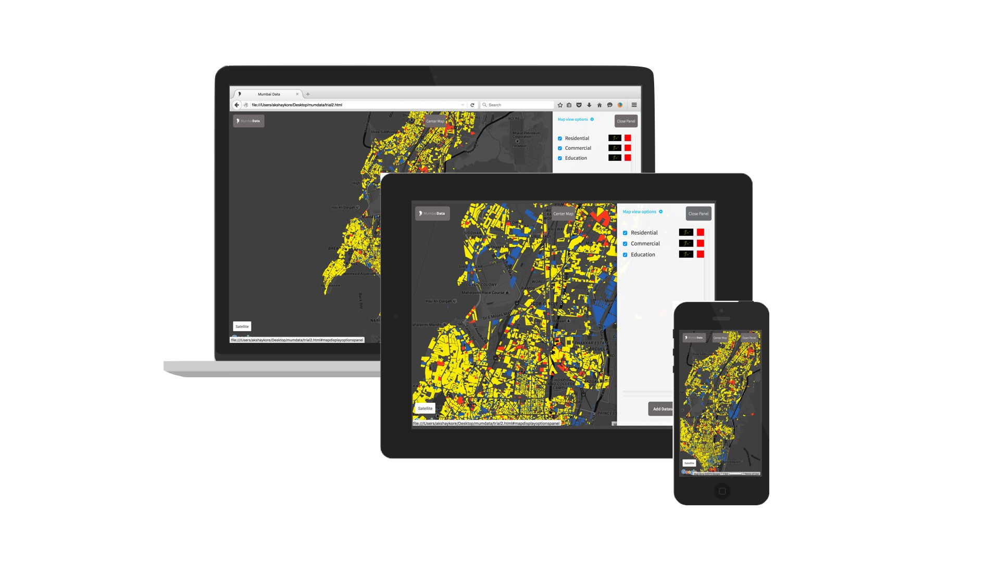
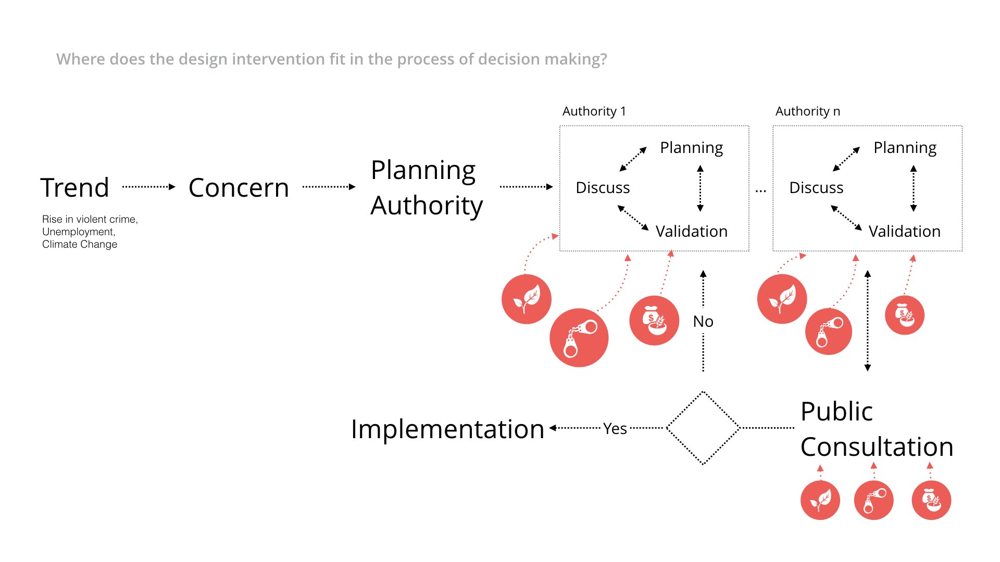
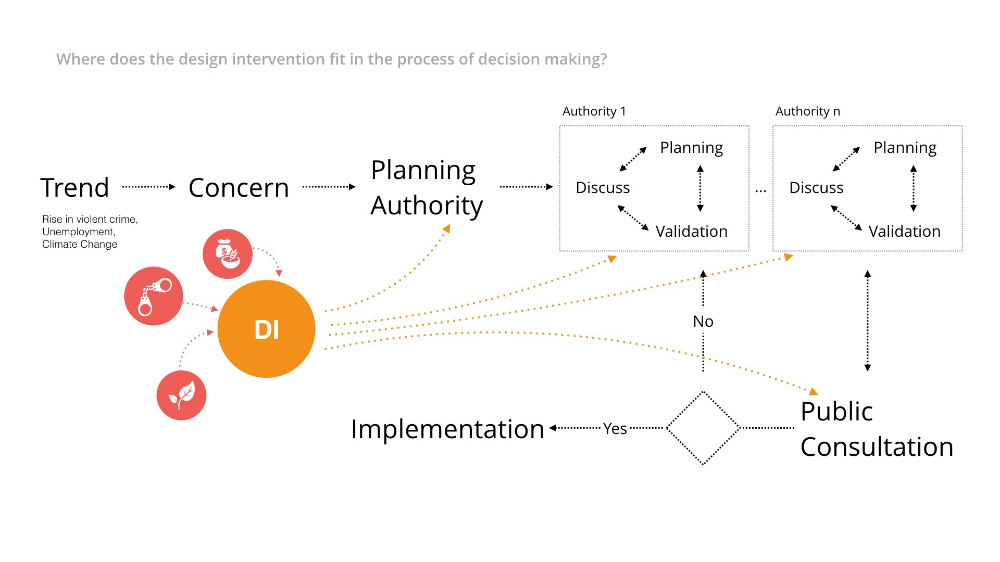
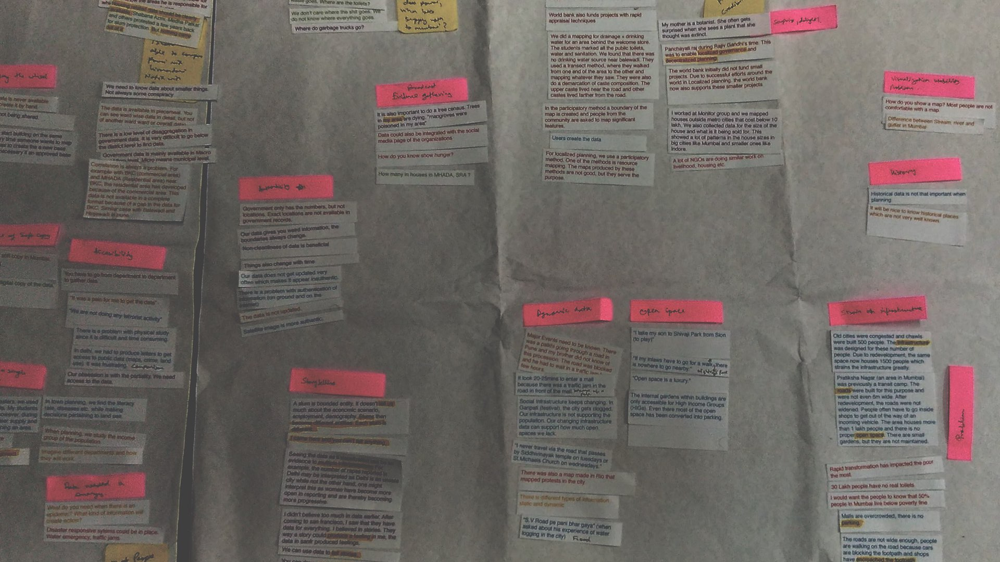
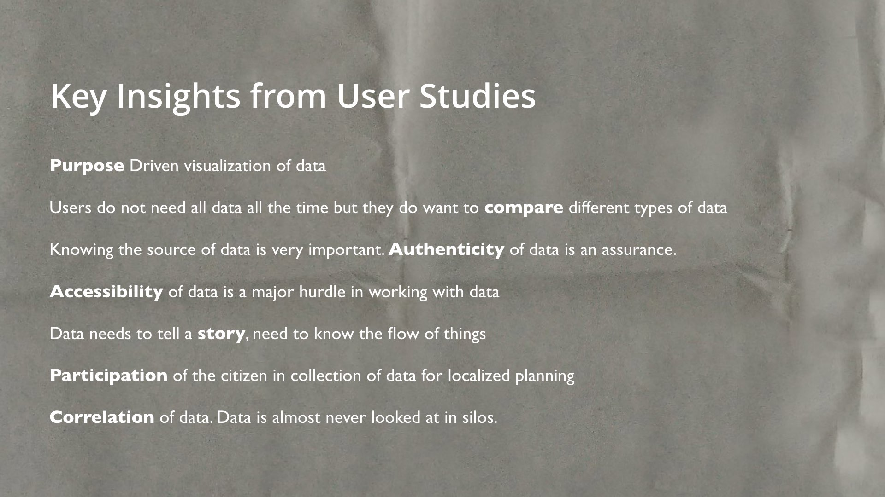
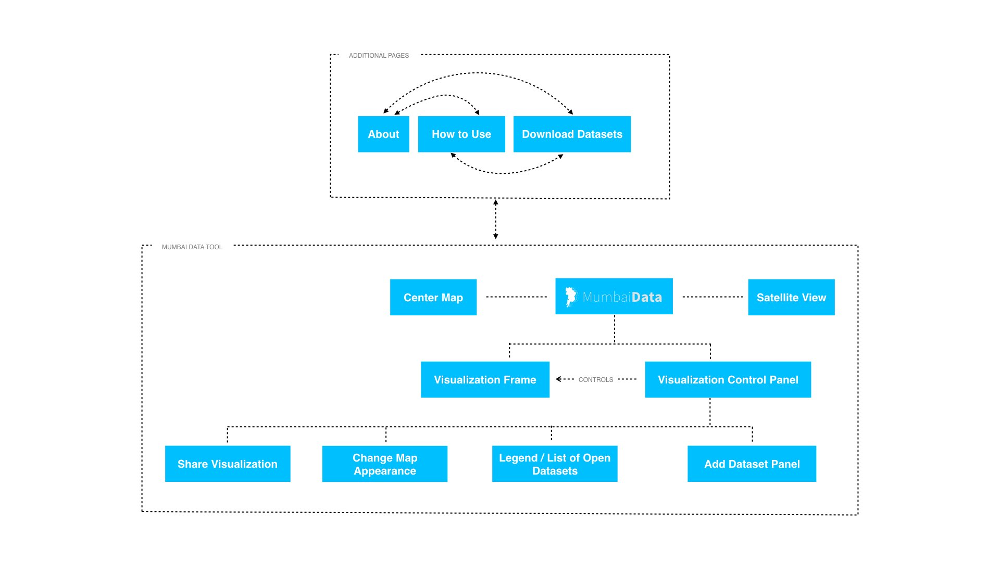
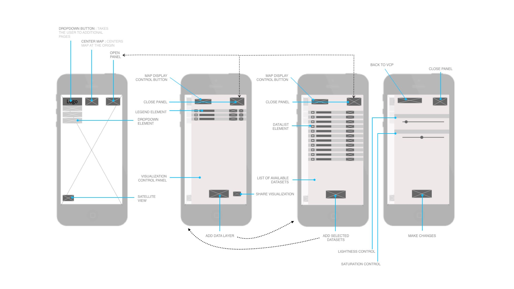
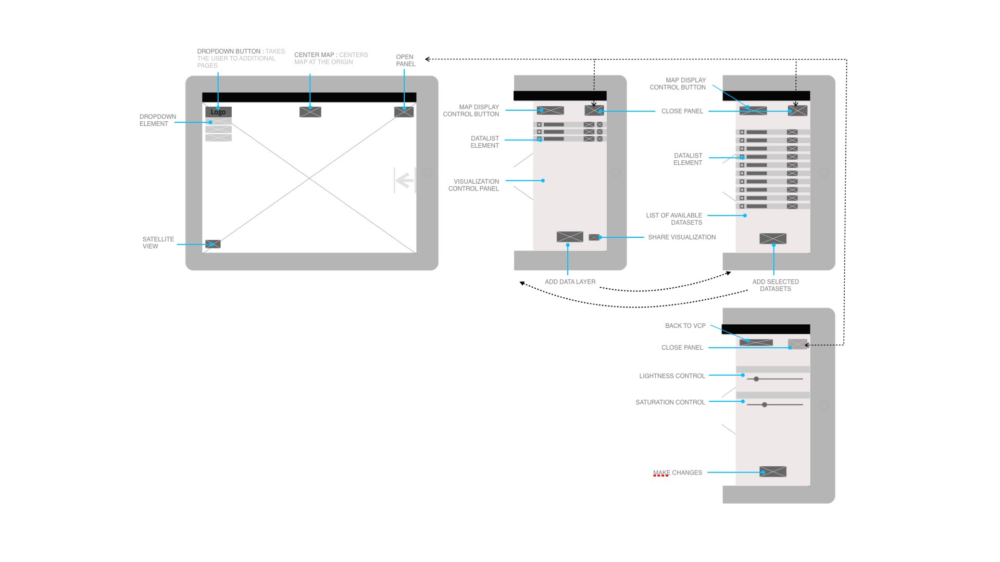
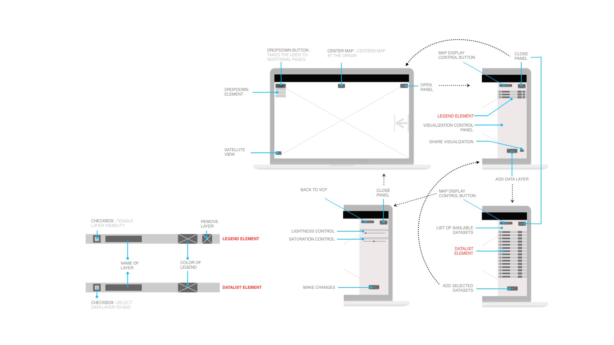
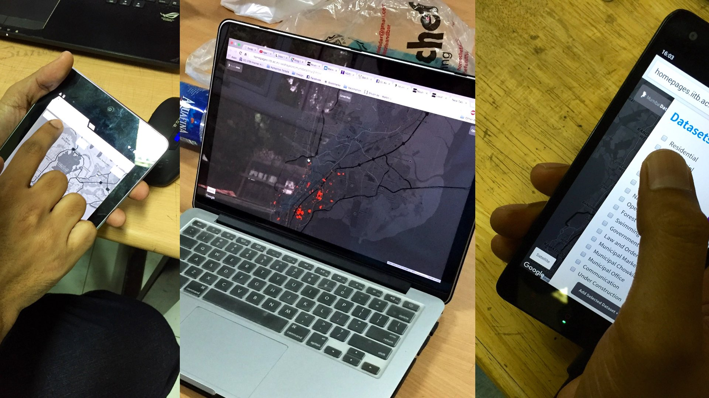

Our governments create and release vast quantities of data about us and our surroundings by means of the census, budgets, human development reports, land use studies , etc. This data is released in the public domain and is regularly accessed and used by policy and decision makers in both the public and private domain. Visualization of enables the analysis of data and especially when the data is available in vast quantities. These decision and policy makers make use of data visualizations regularly. Visualization of data done by these individuals or groups is most often done with a purpose in mind. However, insights can come from anywhere, in seemingly disparate correlations of two or more datasets. Access to these datasets is often difficult due to the scattered nature of our government bodies and even after the access is gained, the datasets come in different tangible and intangible file formats making direct use of these datasets for visualization a difficult and often a laborious task.
With the city of Mumbai as an example, this project aims to enable an easy way to visualize the city’s spatial data. This is done by means of a web based application called the MumbaiData Visualization Tool. The higher goal is to enable faster and better decision making by means of data visualization and set an example for all city governments in the country.
The project is open to use freely and is made available at http://www.mumbaidata.in/
The aim is to provide access to already existing open datasets
MumbaiData is a map based visualization tool for Mumbai’s Data. The idea of layering of datasets is a simple yet profound idea that has been employed in the tool. The data is visualized as layers overlaid on a base map. The data layers are preloaded and can be overlaid on the base map as and when the need arises. Web was selected as a medium for the project, since it makes it fairly device agnostic. The application is meant to be used as a reference rather than for daily use. The layout is thus made responsive to different screen sizes, resolutions and orientations.



A user study was conducted with a number of stakeholders and their statements were recorded. These statements were later used to generate an affinity map.

The affinity mapping led to generation of a number of insights and existing problems. These were later prioritized.





Evaluation and testing for the application was conducted at a number of steps in the product design and development lifecycle.

Data Visualization, Dataviz, User Interface, User Experience, User Studies, Affinity Mapping, Maps, Google Maps API V3, Information Design, Open Data, Big Data, Interaction Design, Web Application, Wireframe, Prototype, Mumbai, Data, MCGM, IITB, Bombay, Indian Institute of Technology